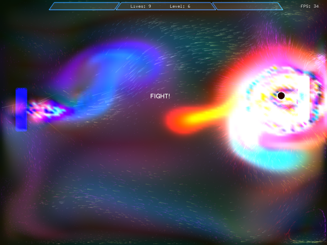

Real-Time Simulation
Computer-Aided Engineering (CAE) software enhances product design and manufacture. In the parallel world of video games and movies, CAE-like software gives life to breath-taking effects and virtual realism.
Plasma Pong
I say CAE-like software because the emphasis is less on physical reality and more on the entertainment quotient. So for movies, such as X-Men, that means presenting physics-warping feats such as weather control. For games, such as race car simulations, it means faking enough of reality to ensure the game feels real but can perform its limited simulation calculations in real time. Thanks to Moore's Law we have ever more powerful computers available for play and work.
Movies typically prefer visual accuracy, while games favor real-time response. The requirement for visual accuracy means render times for movies can take hours per frame, even with massively parallel clusters. These extended time scales for creating movie virtual reality allows more sophisticated simulations, even physically accurate CAE techniques to be used. However, the lack of aesthetics exhibited by realism often requires human intervention to bring the fantastical to life. A whole industry is dedicated to warping physics to the whims of movie directors, e.g. Spiderman swinging on a thread through Manhattan, much to the delight of moviegoers. Who, dealing with the ordinary every day, want to see extraordinary feats in their movies.
Game consoles approach what appears to be reality in real-time. The physics in games matches the entire range covered by work-related CAE software, e.g.:
- Kinematics of race cars cornering
- Deformable, cartoon-like structures in wacky racing games such as Cel Damage
- Airflow simulation in flight simulators e.g. X-Plane
- Water flow simulation
- Fluid-structure interactions for character clothing
The Graphic Processor Units (GPUs), which power the graphics cards that deliver near real virtual game worlds, in some cases exceed the raw number crunching abilities of the typical CPU. This has prompted some people to consider using GPUs for physics simulations, such as real-time flow simulations, with impressive results. Using the same technique, real-time 2D fluid dynamics was incorporated into a game. There is no question that the fractal beauty of time-dependent turbulence makes for impressive visuals. Following the same line of reasoning that led to the graphics card, there is now talk of a physics card.
Ultimately CAE software and game technology will converge, providing near real-time physics with selectable accuracy. Already there is plenty to admire and learn from the optimization techniques employed in the latest games. Very few CAE applications approach real-time response; those that do make assumptions that cover only a limited range of cases e.g. sub-sonic inviscid flow. Still, when these assumptions are met, the techniques are impressively quick (e.g. panel method) and ideal for early concept design analysis. A toolbox of techniques that progressively make fewer assumptions, but typically require more resources and time, is a pragmatic approach until hardware and software developments allow real-time simulations without assumptions.
Feedback
Questions? Ideas? Problems?

Recent blog posts
- CFD Simulates Distant Past
- Background on the Caedium v6.0 Release
- Long-Necked Dinosaurs Succumb To CFD
- CFD Provides Insight Into Mystery Fossils
- Wind Turbine Design According to Insects
- Runners Discover Drafting
- Wind Tunnel and CFD Reveal Best Cycling Tuck
- Active Aerodynamics on the Lamborghini Huracán Performante
- Fluidic Logic
- Stonehenge Vortex Revealed as April Fools' Day Distortion Field
 Get our Blog feed
Get our Blog feed
Comments
Movie Physics Busted
Came across an article on the laws of physics that movie makers don't take for granted.
Applied Geometry Lab
The Applied Geometry Lab of Caltech have an extensive publication list dedicated to "...applications from discrete geometry processing to solid and fluid mechanics."
Oscar for CFD
Thanks to his contributions in Computational Fluid Dynamics (CFD) to movies, such as Pirates of the Caribbean and Harry Potter and the Goblet of Fire, Ron Fedkiw will be award a SFX 2008 Oscar. Check out some of his work: